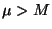

The median is another measure of central tendency for a continuous data set. This
measure can either be computed for a population or for a sample. The sample median is denoted
while a population median is denoted  . For a given set of data
should be considered as an estimate for the corresponding
. For a given set of data
should be considered as an estimate for the corresponding  .
.
The median of a set of data is the value so that 50% of the measurements are less than or equal to it. Thus the median can be interpreted as the exact middle value. To compute the median, the data must first be arranged in ascending order. After this is done the middle value is located. There are two differing situations in locating the median for samples - if there are an odd number of measurements or an even number of measurements. In the former case the median is chosen as the exact middle value while in the latter case the median is taken as the average of the two middle most values. We illustrate this distinction in the next two examples.
EXAMPLE
Consider the data 86,73,81,85,80 and let us compute the median.
We first arrange the data in ascending order
 73, 80, 81, 85, 86
73, 80, 81, 85, 86
Here there are an odd number of measurements and therefore an exact middle value which is 81. Thus here the median is 81. This is a sample median so here .
EXAMPLE
Consider the data 86,73,81,85,80, 82 and let us compute the median.
In ascending order we have
 73, 80, 81, 82, 85, 86
73, 80, 81, 82, 85, 86
Here there are an even number of measurements and therefore no exact middle value. Thus here the median is computed as the average of the two middle values which are 81 and 82. Then
If there are an odd number of measurements, say n of them, then there is an exact middle value.
If the data is arranged in ascending order this exact middle value is located in the
position. In the first example there were 5 measurements so the position of the
median was the (5+1 /2) = 3 rd measurement. If there had been 75 measurements the median would
have been located in the 38 th position. If there are an even number of measurements the median
is the average of the two middle values. If n is even these are the values in the
 nd
and
st positions. In the second example there were 6 measurements so the median
was the average of the third and fourth. If there were 80 measurements the median would be the
average of the 40 th and 41 st after arranging in order.
nd
and
st positions. In the second example there were 6 measurements so the median
was the average of the third and fourth. If there were 80 measurements the median would be the
average of the 40 th and 41 st after arranging in order.
The median has much the same significance as the mean - a central clustering value. It is not as heavily affected by extreme values as the mean but it can be shown that it is not as "reliable" either. That is there is in general more variation in medians of samples drawn from a large population than in means of samples drawn from the same population - assuming the same sample sizes are used. For this reason most statistical analyses will use the mean as the primary measure of central tendency. The median is used when there are extreme outliers.
The relationship between the mean and the median is governed by the symmetry of the data (see measures of skewness). An important characteristic of a population is its symmetry or lack of symmetry . A lack of symmetry is called skew. Many inferential statistical procedures depend on the data being fairly symmetrical and therefore the presence of skew becomes an important concept. The relationship betwen the mean and median can be used to describe these concepts.
If the population (or data) is symmetrical or balanced there is no skew. In this case the mean
and median are approximately equal. Data which has a longer tail to the right hand side is called
skewed right or positively skewed. Personal incomes would generally be skewed right. Most of a
population would tend to have personal incomes towards the lower end of the scale, however there
would be a significant long tail towards the upper end . In this situation the mean will exceed
the median - that is . Lifetimes, of either produced items or living things, tend also
to be skewed right. This is not obvious but can be shown to hold. In general the mean lifetime of
an item will exceed the median lifetime. The median lifetime would be the time when 50% of the
items have failed or died. The final case is where there is a longer tail to the left hand side, that is skewed left
or negatively skewed. College grades, in most cases, are somewhat skewed left. In this case
the median exceeds the mean -  .
.
The median is also a special case of a fractile (see first or third quartiles) which are
measures which divide the data into fractional pieces. In the case of the median this fraction
is